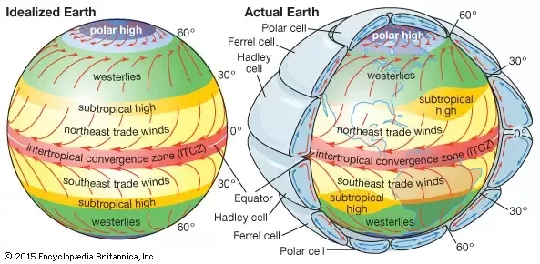

From the graph, much like what we discovered in the humidity graph, we see that a higher concentration of winds are measured between the two tropics (Cancer and Capricorn). It is safe to assume this has to do with the heat and pressure of the earth. But why is this the case? We will need to take a deeper dive into Hadley Cells.
 Hadly Cells are the low-latitude overturning circulations that have air rising at the equator and sinking at roughly 30 degrees latitude. They are responsible for the trade winds in the Tropics (Cancer and Capricorn) and control low-latitude weather patterns. Held and Hou (1980) outlined the dynamics of this circulation through a simplified model of the Hadley Cell. For the model, there are three main assumptions. First, the Hadley Cell circulation is constant. Second, the air moving toward the poles in the upper atmosphere conserves its axial angular momentum, while the surface air moving equatorwards is slowed down by friction. Third, the thermal wind balance holds for the circulation.
The zones marked subtropical high are your answers: high pressure zones that exist at certain latitudes. Those cells of recirculation are caused by uneven heating of the surface and they move air (and thus alter pressure) at a global level. At the 30 degrees discontinuities you have the Jet Stream moving air at well over 150 kph. That jet stream changes pressure under it. Thus, jet streams affects cyclonic storms in the lower part of the atmosphere.